Overview of the presentation
- Background
- What is ChIP-seq?
- Overview of problem
- Comparing ChIP-seq data
- Review of existing methods
- My Approach
- Finding differential binding sites
- Results
- Evaluate method
- Compare with other methods
- Conclusion
Colin Diesh
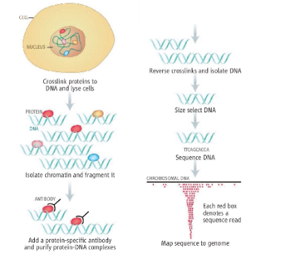 Huber et al, 2006
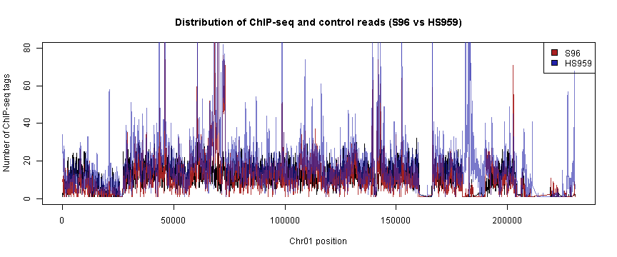
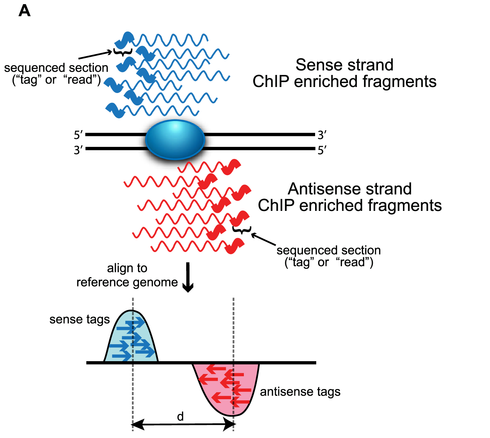
Wilbanks et al, 2010
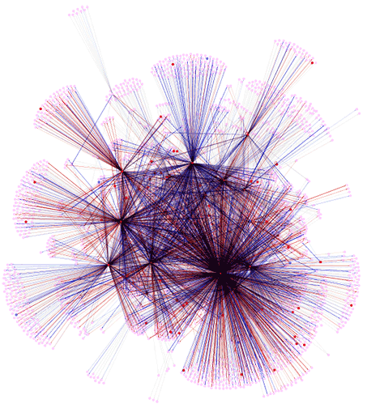 From http://genome.tbdb.org/annotation/genome/tbdb/RegulatoryNetwork.html
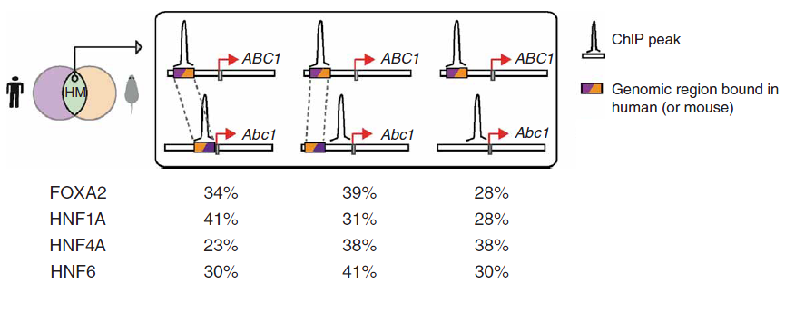
Odom, Dowell et al. 2007
We observe a different read depths in our experiments
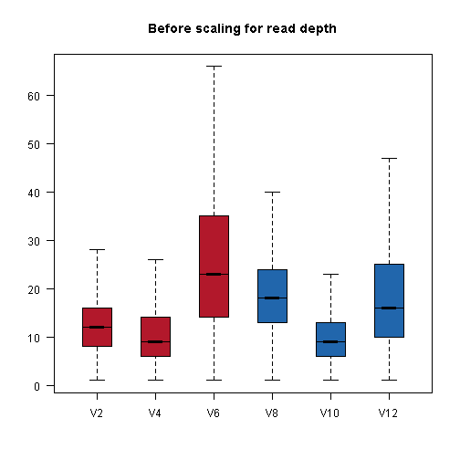
Then we perform scaling to match the median value across all experiments
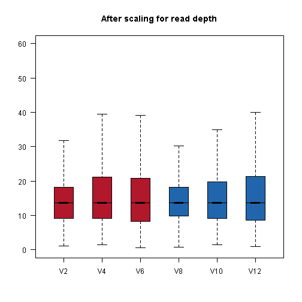
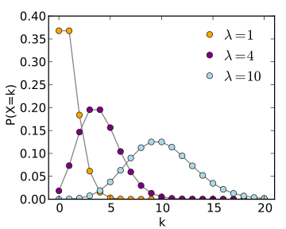
Different views
## Chr Pos S96 S96 S96 HS959 HS959 HS959
## 1 chr01 51 11.37 30.31 22.53 25.76 110.63 77.57
## 2 chr01 61 11.37 27.28 22.53 25.76 110.63 80.13
## 3 chr01 121 11.37 24.25 21.94 20.46 56.07 73.31
## 4 chr01 131 10.23 24.25 21.94 18.19 54.56 72.46
## 5 chr01 141 10.23 22.73 20.16 18.94 50.01 65.64
## 6 chr01 151 10.23 18.19 21.94 18.94 46.98 61.38
Table of read scores from multiple ChIP-seq experiments
Benefits of approach
Cons

Standard t-test
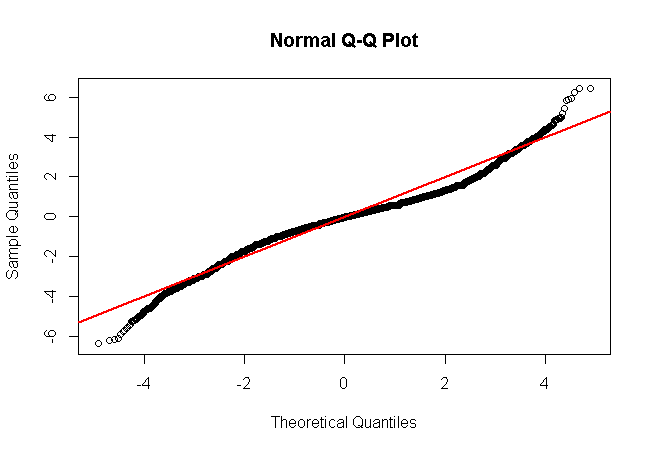
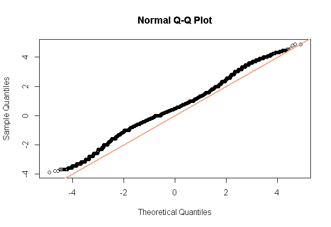
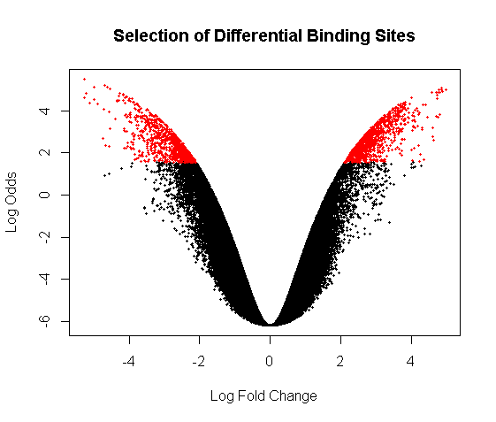
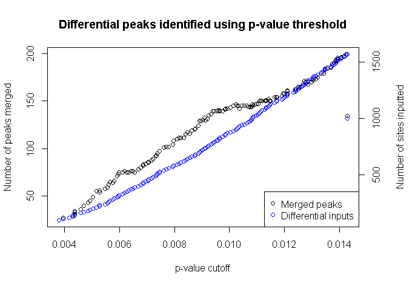
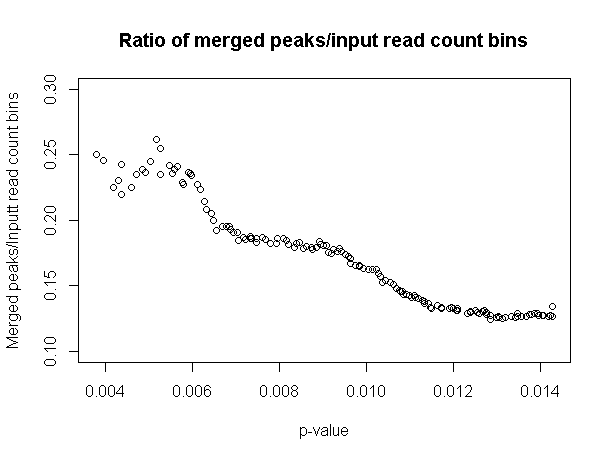
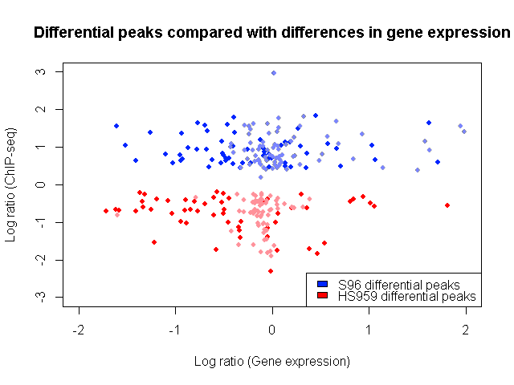